채널: 휴먼스토리 | 길이: 17:59 | 날짜: 2026-05-29
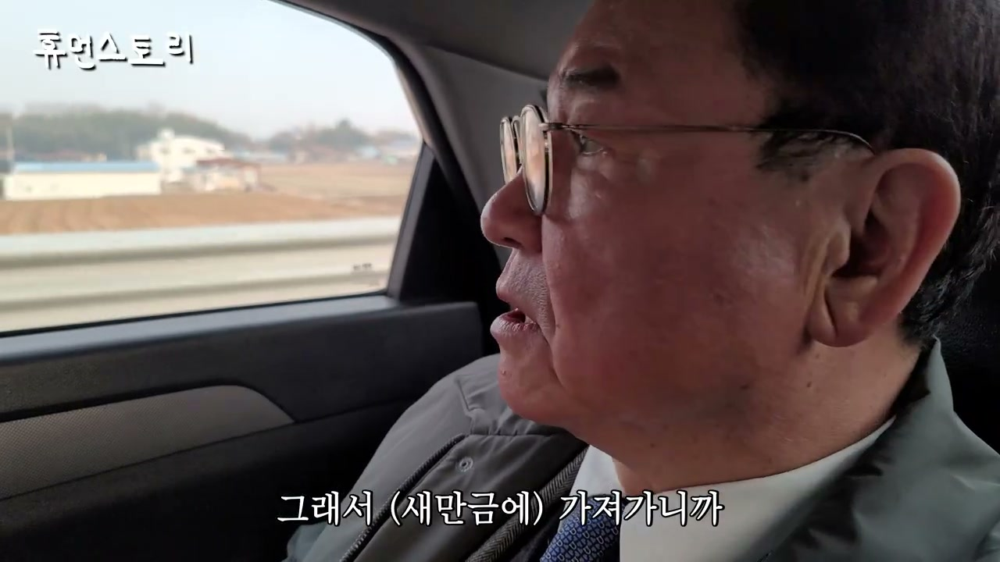
영상은 주인공의 과거 성공과 현재 실패담을 압축해서 시작한다. 그는 자신을 “반도체 1세대”라고 소개하며, LG 반도체를 많이 팔던 시절에는 전체 물량의 약 30%를 혼자 팔았다고 말한다. 당시 현금만 약 500억 원이 있었고, 사업적으로는 남들이 부러워할 위치에 있었다는 점이 강조된다.
그러나 그 돈은 군산의 6만 평 규모 산을 매입한 뒤 새만금 사업과 연결된 기대가 어긋나면서 사라져 갔다. 그는 산의 돌을 새만금에 팔면 산이 평지가 되고, 그 위에 1,500세대 아파트를 짓거나 은퇴하듯 쉬며 살 수 있으리라 생각했다. 하지만 돌을 새만금에 가져가 보니 바닷물과 파도에 견딜 수 없어 사용할 수 없다는 답을 들었고, “그 많은 돈”이 10년쯤 지나자 없어졌다고 회고한다.
도입부는 단순한 불행 소개가 아니라 이 영상 전체의 구조를 제시한다. 첫째, 그는 이미 큰 성공을 해본 사람이다. 둘째, 실패는 게으름이나 무능이 아니라 잘못된 판단과 자원 이해 부족에서 출발했다. 셋째, 돈이 떠나자 사람도 떠났고, 이후 그는 모욕과 의심까지 견뎌야 했다.
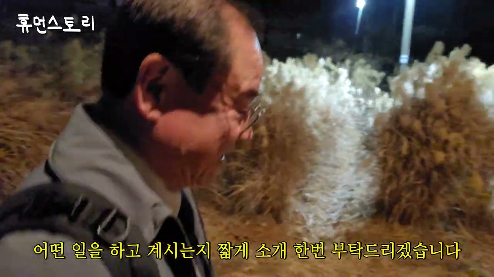
본격적인 하루는 서울특별시 새벽 5시에 시작된다. 제작진이 새벽부터 어디로 가는지 묻자 그는 군산으로 간다고 답한다. 군산에는 자신의 광산이 있고, 일주일에 한 번쯤 내려가 현장을 확인한 뒤 서울로 올라와 진행 중인 여러 일을 본다고 설명한다.
이 동선은 그의 나이와 현재 상태를 보여주는 핵심 장치다. 그는 1955년생, 71세라고 밝히지만 여전히 서울과 군산을 오가며 현장과 회사를 직접 관리한다. 직원에게 맡겨두는 경영자가 아니라 광산, 연구, 제품, 회의, 사업화 전 단계를 본인이 직접 챙기는 사람으로 그려진다.
그는 자신이 하는 일을 “돌 사업”이라고 단순하게 소개한다. 더 정확히는 산에 있는 운모라는 광물을 기반으로 사업을 하는 사람이라고 말한다. 초반에는 이 운모가 단지 돌 이름처럼 들리지만, 이후 영상 전체에서 이 광물이 실패의 원인이자 재기의 재료이자 사회 환원 목표의 중심으로 바뀐다.
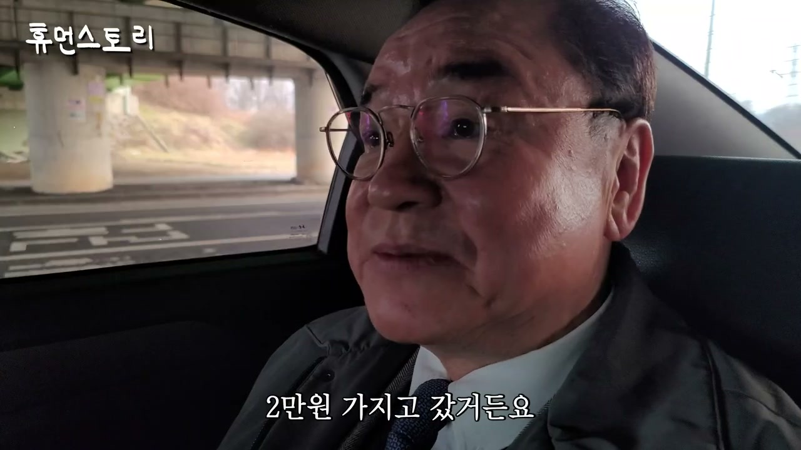
군산으로 이동하는 차 안에서 그는 어떻게 이 일을 시작하게 됐는지 묻는 질문을 받는다. 그는 처음부터 돌 사업을 한 사람이 아니었다. AT&T라는 전화기·통신 회사가 있었고, 자신이 한국 초대 사장 역할을 했다고 설명한다.
그는 미국에 건너갈 때 실제로 2만 원을 가지고 갔다고 말한다. 이후 어떻게든 통신 회사에 들어가고, 아시아·태평양 바이어 역할을 하게 되었으며, 30세에 한국 책임자로 왔다고 회고한다. 제작진은 이를 남들이 부러워할 만한 빠른 성공이라고 정리하고, 그는 당시 모두가 부러워했다고 인정한다.
그 뒤 AT&T를 나와 약 10년 동안 반도체 사업을 했다고 한다. 이 이력은 이후 군산 돌산 매입이 왜 가능했는지를 설명한다. 그는 그냥 투기적으로 땅을 산 사람이 아니라, 이미 국제 통신·반도체 유통에서 큰돈을 번 사람이었고, 자신감과 자본이 모두 있었던 상태에서 새 사업에 들어갔다.
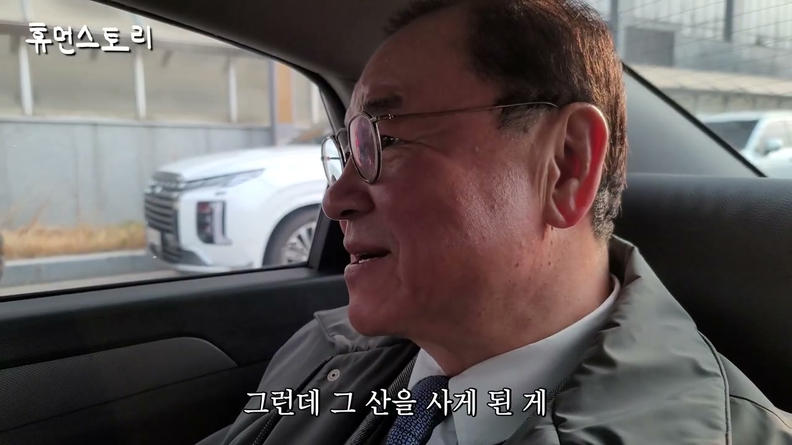
그는 반도체 사업 시절 LG 반도체 물량의 약 30%를 혼자 팔았다고 반복해 강조한다. 제작진이 돈을 많이 벌었겠다고 하자 그는 현금이 약 500억 원 있었다고 말한다. 이 수치는 단순 과장이 아니라 이후 몰락 규모를 이해시키는 기준점이다.
1996년 그는 군산의 산을 산다. 그런데 같은 해 가을쯤 LG 반도체가 현대 하이닉스로 넘어가는 대규모 거래, 즉 빅딜이 있었다고 설명한다. 이 사건으로 그는 큰 좌절을 느꼈고, 홍콩·런던·산호세에도 사무실이 있었던 글로벌 사업 기반을 접어야겠다고 생각했다고 말한다.
이때 그는 “이제 그만하자”는 심정이 되었다. 반도체라는 고성장 산업에서 성공했지만, 대기업 구조조정과 산업 재편 앞에서 개인 사업자로서의 한계를 느낀 것이다. 군산 돌산 매입은 그런 피로와 좌절 뒤에 “이제 쉬자”는 심리와 맞물려 있었다.
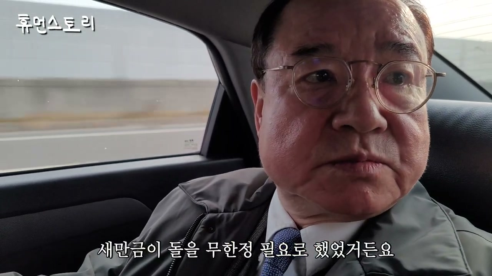
새만금 프로젝트는 그의 인생을 바꾼 결정적 배경이다. 그는 새만금 사업이 1996년에 시작됐고, 당시 한일은행 쪽에서 군산이 앞으로 좋아질 것이며 채석장 허가가 나 있는 땅을 사라고 권했다고 설명한다. 그 말에 따라 그는 군산의 돌산을 사게 됐다.
그의 사업 구상은 표면적으로 매우 단순했다. 새만금에는 방조제와 매립을 위해 돌이 무한정 필요하니, 산의 돌을 모두 팔 수 있다고 생각했다. 돌을 팔고 나면 산은 평지가 되고, 이전에는 없던 아파트를 지어 1,500세대 규모 개발까지 가능하다고 봤다.
그는 그 계획이 성공하면 평생 일하지 않고 쉬는 삶을 생각했다고 솔직히 말한다. 제작진이 “평생 일 안 하고요?”라고 묻자, 그는 그것을 “아주 나쁜 생각”이었다고 웃으며 돌아본다. 이 대목은 돈을 번 뒤 안주하려던 마음, 그리고 그 마음이 이후 30년의 고난으로 이어졌다는 자기반성의 출발점이다.
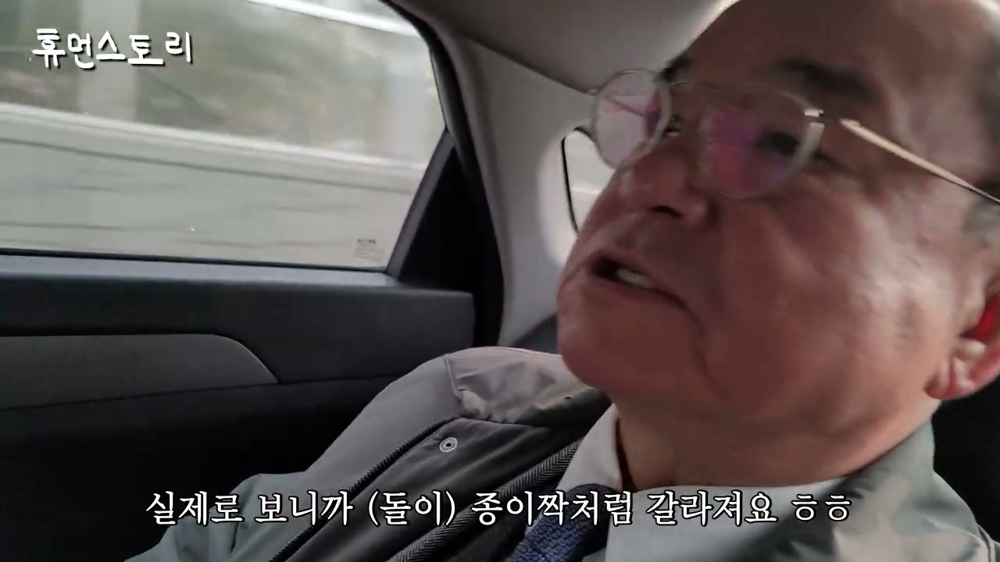
산을 깎고 나무를 벗기고 흙을 걷어내면서 그는 드디어 돌을 만났다. 그러나 새만금에 가져간 뒤 돌아온 답은 치명적이었다. 이 돌은 바닷물을 막는 용도로 쓸 수 없다는 것이었다.
이유는 돌의 물성에 있었다. 방조제용 돌은 파도에 맞고 물에 젖어도 버텨야 하는데, 그의 산에서 나온 운모 계열 돌은 물에 젖고 충격을 받으면 갈라진다고 한다. 그는 실제로 보니 종잇장처럼 갈라졌다고 표현한다.
중요한 것은 그가 이 사실을 산 뒤에야 알았다는 점이다. 반도체를 접을 때의 좌절은 산업 구조 변화에서 온 것이지만, 돌산 실패는 자신이 자산의 본질을 몰랐다는 데서 오는 좌절이었다. 그는 그 돌을 팔아 편하게 살려고 했지만, 오히려 돌 때문에 인생이 다시 어려워졌다.
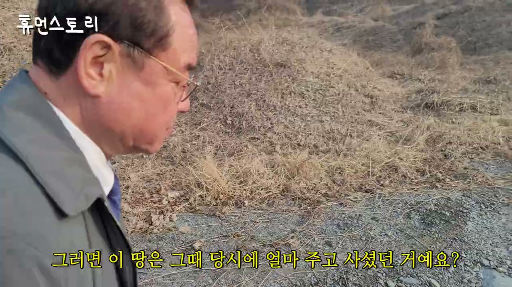
그는 많은 돈이 약 10년 지나자 없어졌다고 말한다. 돈이 떠나면 사람도 다 떠난다고 덧붙인다. 실패 이후에는 모욕적인 말과 사기꾼 취급까지 들었다고 한다.
군산 광산에 도착한 뒤 제작진은 이 땅을 당시 얼마에 샀는지 묻는다. 그는 약 30년 전 16억 원 정도였다고 답한다. 당시 기준으로도 큰돈이었고, 이후 수백억 원을 더 투입하거나 잃었다는 맥락에서 이 16억 원은 시작 비용일 뿐이다.
그 뒤 그는 무엇을 해야 할지 몰랐다고 말한다. 돌을 몰랐기 때문에, 산을 어떻게 써야 할지도 몰랐다. 처음 시작한 것은 농업용으로 쓰면 좋다는 말을 듣고 돌을 분말로 만드는 일이었다.
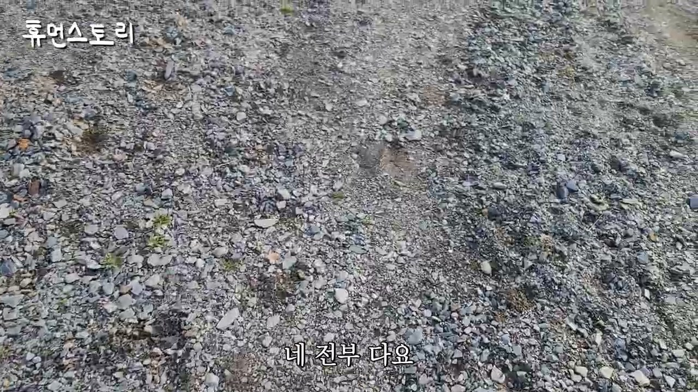
그는 돌을 분말로 만들기 위해 현장에서 수백 번 발파했다고 설명한다. 발파는 다이너마이트로 했고, 돌을 깨서 옮긴 뒤 분말·자재 형태로 만들었다. 현장 바닥에 널린 돌도 모두 자기 산에서 나온 운모라고 말한다.
제작진은 돌이 단단해 보이는데 왜 부서진다고 했는지 묻는다. 그는 돌 자체는 단단하지만 조류가 밀려오는 힘, 파도, 물의 작용을 받으면 갈라지는 문제가 있다고 설명한다. 즉 육상에서의 단단함과 해양 토목 자재로서의 내구성은 다른 문제라는 점이 드러난다.
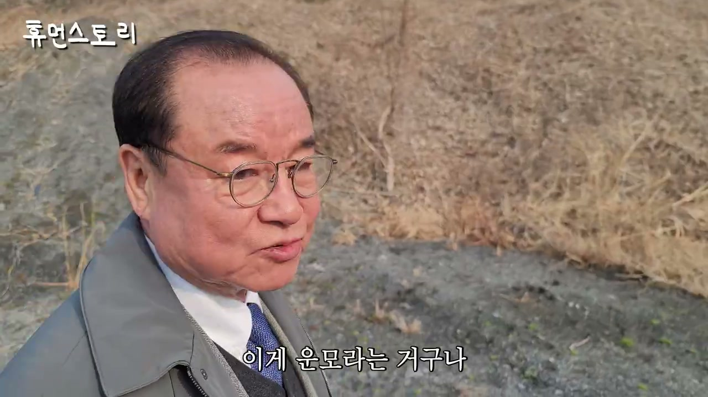
매장량은 약 1,000만 톤으로 제시된다. 그는 지하에도 엄청나게 많다고 말한다. 하지만 이 땅에는 더 이상 아파트를 지을 수 없고, 2004년에야 이것이 운모라는 광물임을 알았으며, 2008년에 광산 허가를 받았다고 설명한다.
이 대목은 실패가 곧바로 사업화로 이어지지 않았음을 보여준다. 1996년 매입, 2004년 광물 인식, 2008년 광산 허가라는 시간이 흐른다. 즉 그는 단순히 한 번 실패한 뒤 바로 재기한 것이 아니라, 10년 가까운 탐색과 행정 과정을 거쳤다.
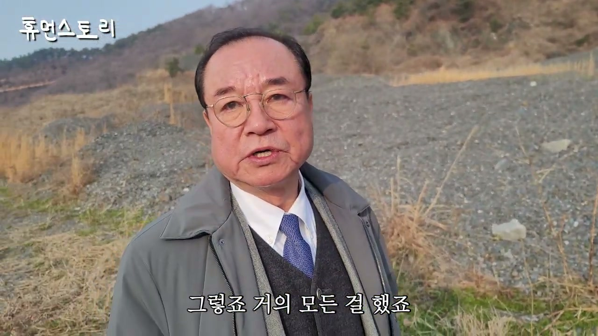
그는 운모를 농업용으로 쓰려 했고, 그것이 지금도 이름이 알려진 ‘천매암 농법’의 시작이었다고 주장한다. 그러나 농업은 어렵다고 말한다. 농민들은 자기 것만 잘되면 되고, 좋은 방식이 있어도 남에게 잘 알려주지 않기 때문에 퍼지기 어렵다고 설명한다.
축산도 약 3년 해봤다. 운모를 사료에 섞어 닭에게 먹이면 좋다고 보았지만, 이것 역시 사업적으로 성공하지 못했다. LS전선 같은 곳에 난연재를 납품하려는 시도도 실패했다고 한다.
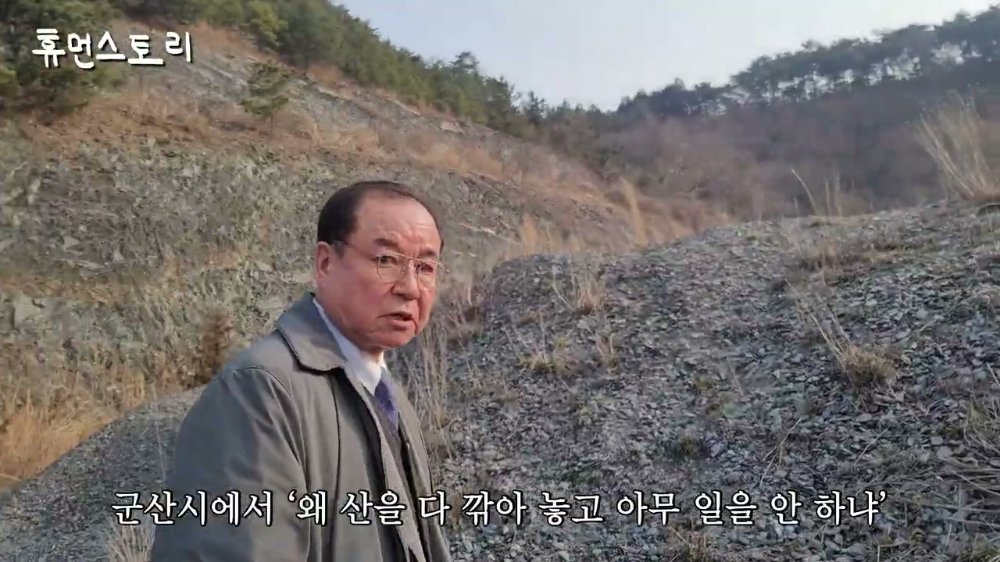
그는 운모로 할 수 있는 거의 모든 것을 해봤다고 말한다. 심지어 접시까지 만들었다. 이는 소재 사업의 어려움을 보여준다. 소재는 한 가지 완제품이 아니라 여러 산업으로 확장될 수 있지만, 그만큼 어디에 맞는지 찾기까지 수많은 실패가 필요하다.
군산시의 압박도 있었다. 산의 나무를 다 깎아놓고 아무 일도 하지 않느냐는 문제 제기가 있었고, 그래서 그는 작업과 연구를 계속할 수밖에 없었다. 이 과정에서 돌을 공부하고, 써보고, 돌이 들어갈 수 있는 제품을 모두 만들어보는 장기 탐색이 시작됐다.
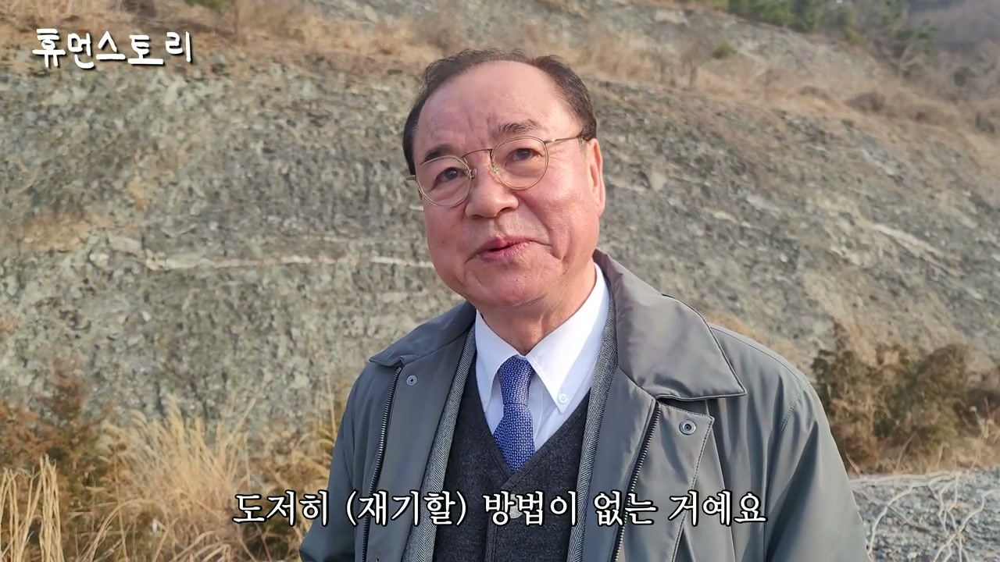
그는 10년쯤 지나니 재산이 없어졌다고 말한다. 잘나가던 사람이 나락으로 떨어지면 좌절이 심하고, 어떻게 할 수가 없다고 표현한다. 사업 실패 뒤에는 빚이 생기고 집도 사라졌으며, 있던 돈을 다 썼다고 고백한다.
그는 그 시기를 “사람이 아닌” 상태였다고 말할 정도로 무너졌다고 한다. 자녀들은 공부하고 있었고, 그는 도저히 재기할 방법이 보이지 않았다고 회고한다. 이때 죽음을 생각했지만, 자녀에게 상처가 될 것이라는 생각과 수치심 때문에 그것도 쉽지 않았다고 말한다.
2011년 후쿠시마 원전 사고 보도는 그의 극단적인 심리 상태와 연결된다. 그는 텔레비전에서 후쿠시마 원전 사고를 보고, 그곳에 가면 자신이 죽을 수 있겠다고 생각했다고 한다. 이 고백은 영상에서 가장 어두운 전환점이며, 이후 기술 개발 서사의 출발점이 된다.
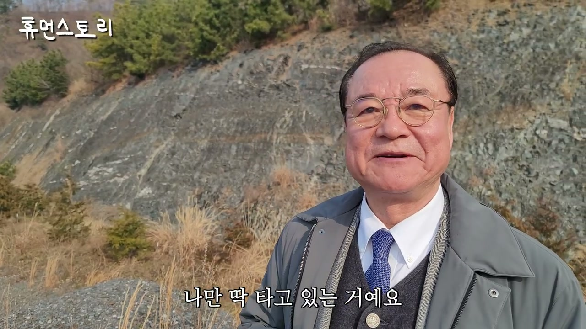
그는 실제로 돈 100만 원을 빌려 일본에 갔다. 당시 그에게 100만 원도 큰돈이었고, 그만큼 경제적으로 바닥에 가까웠다고 말한다. 도쿄에서 신칸센을 타고 후쿠시마로 향했는데, 그 방향으로 가는 열차에는 승객이 거의 없고 자신만 타고 있었다고 회고한다.
반대로 내려오는 사람들은 피난민이었다. 그는 그곳에서 ‘코아라이트’라는 것을 만들었다고 설명한다. 코아라이트는 방사능 오염수를 처리하기 위한 물질로 소개된다.
흥미로운 반전은 그가 삶을 포기하러 갔다고 말하면서도, 실제 행동은 개발과 연구로 이어졌다는 점이다. 그는 일본 공과대학 교수의 도움을 받아 방사능 물질을 흡착하는 기술을 만들었다고 말한다. 자신이 10년 동안 운모를 들여다보며 알게 된 흡착력을 후쿠시마 문제에 적용하려 한 것이다.
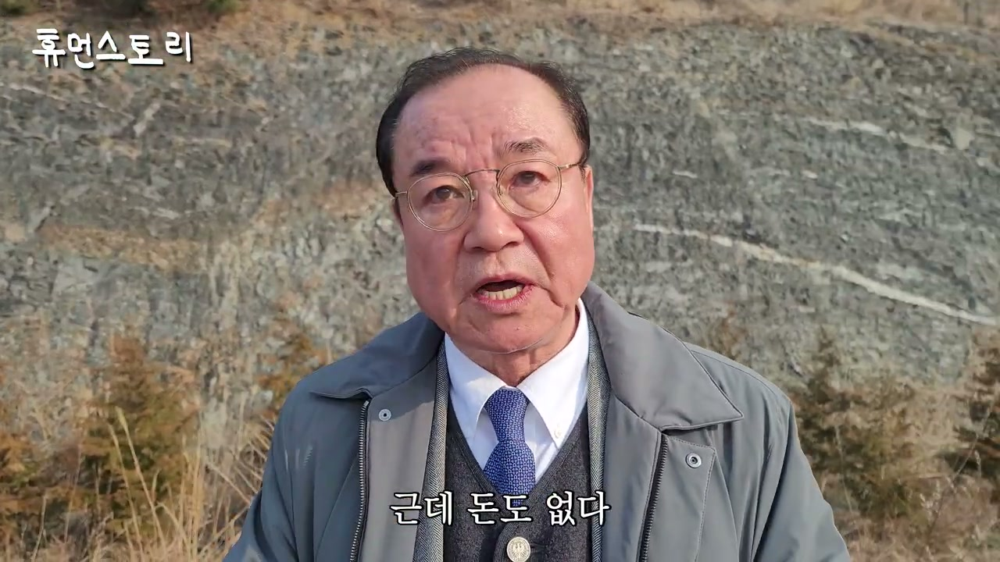
그는 운모가 냉장고 냄새를 없앨 정도의 흡착력을 갖고 있다고 설명한다. 이 성질을 10년 동안 돌을 보며 알게 되었고, 후쿠시마의 방사능 물질도 잡을 수 있겠다는 가능성을 떠올렸다고 한다. 다만 어떻게 잡을지는 몰랐고 돈도 없었지만, 일단 일본에 가서 해보자는 식으로 움직였다고 말한다.
도쿄에 있는 사람이 이 개발 가능성을 알고 자금을 대주겠다고 하면서 개발이 본격화됐다. 그는 자신에게 돈이 없었기 때문에 일본 회사의 지원으로 밤을 새워가며 만들었다고 회고한다. 이 구간은 실패한 자원이 기술 자산으로 바뀌는 핵심 전환점이다.
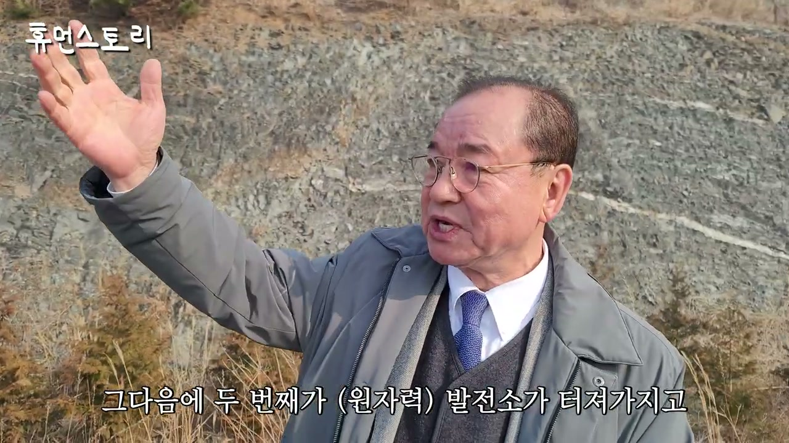
일본 정부는 2013년 또는 2014년경 방사능 물질을 흡착하는 세계적 기술 공모를 했다고 한다. 그는 방사능 물질은 물 처리로 다루며, 오염수가 하천으로 가면 결국 환경 오염이 되고 다시 사람에게 돌아온다고 설명한다. 또 세슘이 대기 중으로 올라갔다가 산과 논에 내려앉고, 오염된 흙을 걷어 씻는 작업도 필요하다고 말한다.
그 공모에서 그는 운모와 다른 광물 돌가루 6가지를 섞은 조합으로 참여했고, 5개 안에 선정됐다고 주장한다. 전 세계 1만 개 이상 회사가 참여했고, 선정된 대부분은 일본 기업이었으며 한국인은 자신이었다고 말한다. 그는 그것을 대단한 영광으로 생각한다고 한다.
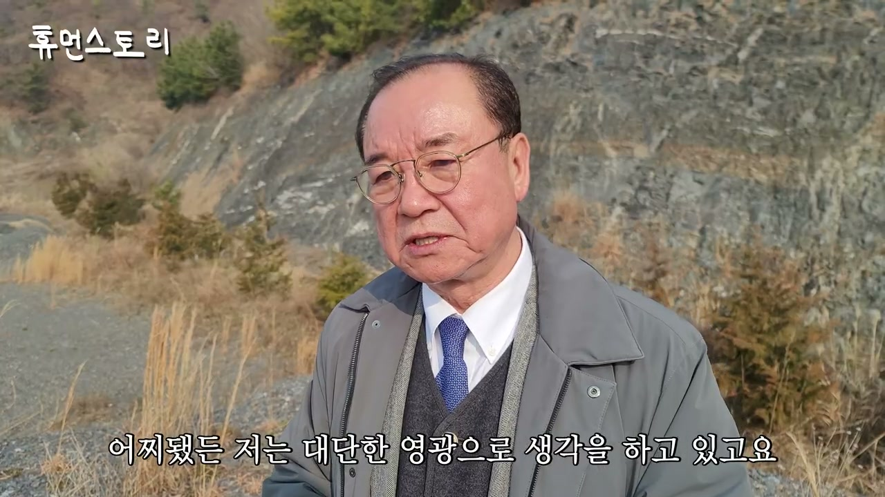
그는 일본에서 살아남았지만, 그 과정에서 방사능 피폭을 겪었다고 말한다. 몸이 24시간 간지럽고, 자기의 약한 부위가 상하기 시작하며, 귀가 새까매지고 살이 썩는 듯한 증상이 있었다고 표현한다. 그는 이것을 세포가 죽는 것처럼 설명한다.
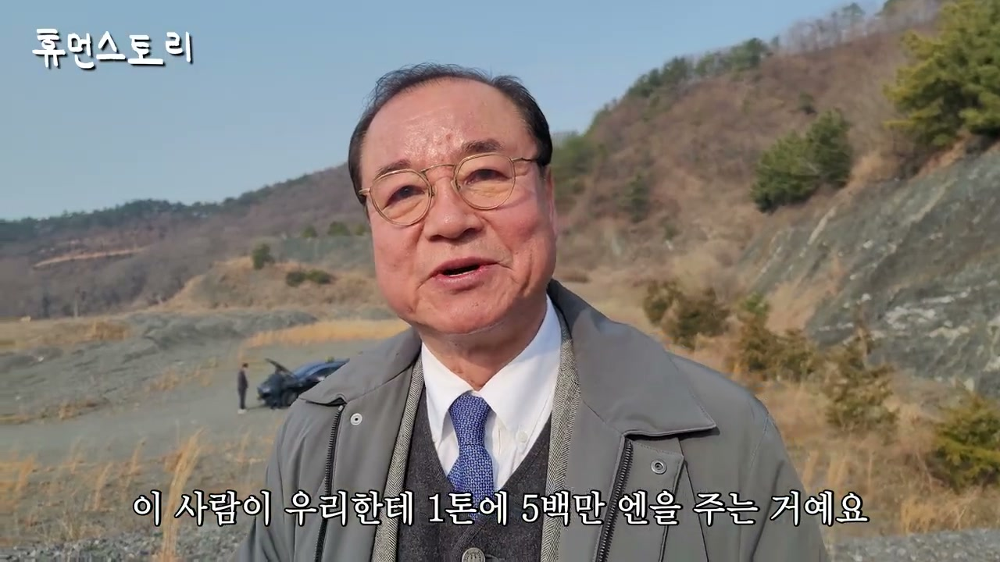
이후 불면증도 매우 심했다고 한다. 잠을 못 자기 시작했고, 수면제를 매일 다섯 알까지 먹었다고 말한다. 약을 먹지 않으려고 밤새 술을 마시기도 했고, 스스로 아주 비참한 생활이었다고 회고한다.
그러던 중 일본 사람이 운모를 매우 비싼 값에 사가기 시작했다. 1톤에 500만 엔, 원화로 약 5,000만 원 수준이었다. 한국에서 골재로 팔면 1톤에 13,000원도 안 되던 돌이 화장품과 피부 테라피 용도로는 전혀 다른 가격을 갖게 된 것이다.
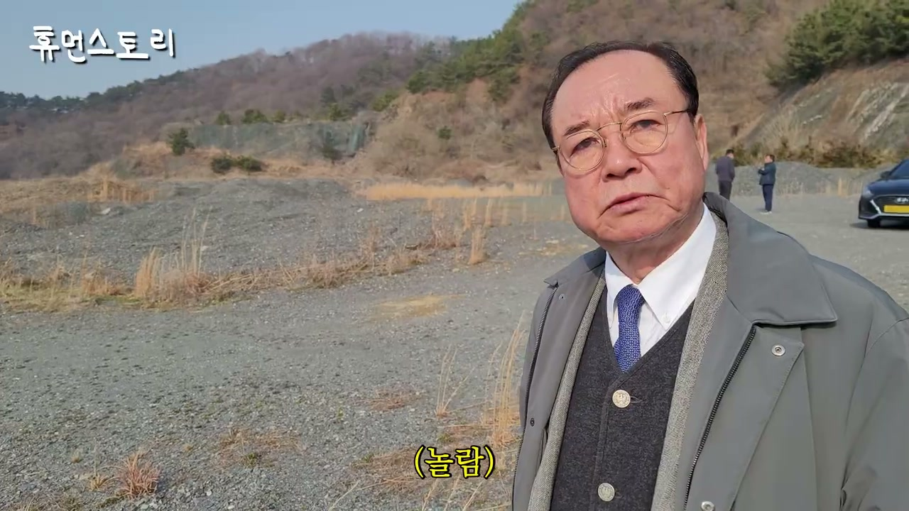
그는 일본 구매자가 운모를 화장품과 피부 테라피에 쓴다는 이야기를 듣고 새로운 가능성을 발견했다. 자신도 이 돌을 화장품처럼 활용하면 되겠다고 생각했고, 자신의 귀에도 발라보았다고 한다. 이후 강남의 유명 피부 테라피 6곳에 납품을 시작했다.
이 흐름이 ‘잠도깨비’라는 제품군으로 이어진다. 그는 영상에서 제품의 기반이 모두 그 운모라고 설명한다. 현재 약 1,000만 톤의 운모가 있고, 가치로 따지면 1조 원이 넘는다고 말하지만, 자신처럼 30년을 버틴 사람에게 돈 자체는 큰 의미가 없다고 한다.
그에게 더 중요한 것은 이 돌들을 좋은 곳으로 보내는 책임이다. 즉 광산 자원은 단순히 팔아 돈을 버는 대상이 아니라, 30년 동안 실패와 연구를 거쳐 사회에 쓰임을 만들어야 하는 대상이 되었다. 다음 달에는 이 자재로 유기농 자재 국가 고시를 받는다고도 말한다.
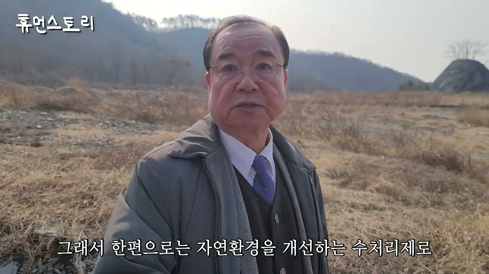
그는 운모 파우더를 물에 섞어 뿌리면 곰팡이를 잘 잡고 탄저가 없어진다고 주장한다. 이를 통해 농약 없이 농업에 쓸 수 있는 가능성을 설명한다. 농약 피해가 많으므로, 자신의 물질로 무농약 농업을 하면 좋은 먹거리를 만들고 팔 수 있다고 본다.
동시에 그는 자연환경을 개선하는 수처리제로 국가기술 등재를 추진하고 있다. 일본에서 했던 것처럼 한국에서도 정식 제도권 안에 자신들의 물질이 들어가도록 하려는 것이다. 그래서 오후 회의에 빨리 돌아가야 한다고 말한다.
이 장면은 그가 더 이상 단일 제품 판매만 보는 것이 아니라, 농업·수처리·환경 복원이라는 공적 영역까지 사업 목표를 확장하고 있음을 보여준다. 운모는 처음에는 새만금 방조제용 돌로 실패했지만, 이제는 흡착, 정화, 농업 보조 자재라는 다른 용도로 재정의되고 있다.
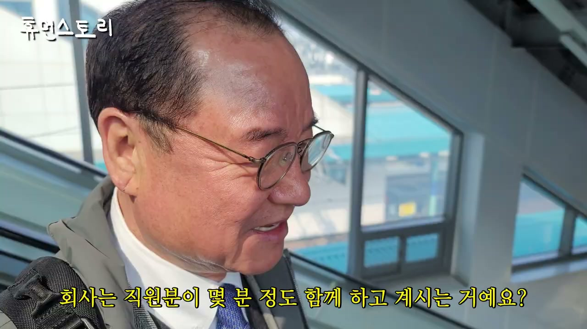
제작진이 현재 잠도깨비 관련 사업 매출을 묻자 그는 2023년 9월부터 2024년 9월까지 100억 원을 했다고 말한다. 회사 인원은 5~6명 정도라고 설명한다. 잠도깨비만 조직화되어 있고, 상업화 전 단계의 대부분은 아직 자신이 직접 한다고 한다.
그는 제품이 한 품목이면 쉬운데, 이것은 기초 소재라 확장성이 엄청나다고 말한다. 바로 그 무한한 확장성을 보고 무한도전을 했다가 무한하게 깨졌다고 표현한다. 이 말은 영상의 사업적 핵심이다. 소재는 성공하면 넓게 퍼질 수 있지만, 어디에 맞는지 찾기 전까지는 계속 실패할 수밖에 없다.
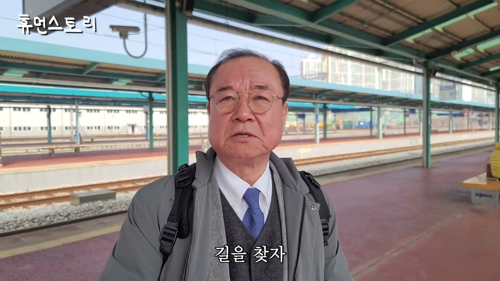
그는 좌절과 실패가 제품 종류만큼 반복됐고, 그렇게 30년이 걸렸다고 말한다. 사업을 하든 직장을 다니든 인생에서 좌절은 누구나 겪는다고 하며, 다시 일어날 수 있었던 심정을 묻자 “길을 찾자”는 말로 답한다. 실패한 것도 자기 탓이고, 하늘이 길을 열어주지 않은 면도 있겠지만, 결국 중요한 것은 사람이라고 정리한다.
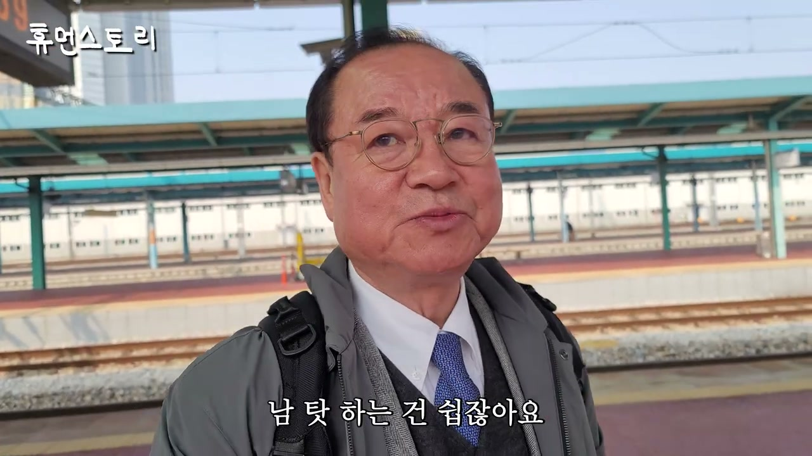
그는 사람을 잘 만나야 하지만, 사람을 잘 만나기 위해서는 내가 먼저 준비되어 있어야 한다고 말한다. 내가 그만큼 해놓고 사람을 기다리는 것이지, 사람·돈·사랑을 쫓아가면 쓴맛뿐이라고 한다. 여기서 그의 실패론은 단순 근성론이 아니라 준비론으로 정리된다.
그는 꽃에 향기가 있으면 벌이 오듯, 자신이 먼저 충분히 준비되어야 한다고 비유한다. 좌절이 있을 때마다 자신을 들여다보는 시간이 많았고, 사람은 다 이기적이기 때문에 어려움이 생기면 남 탓하는 것은 쉽지만 내 탓을 하는 것은 어렵다고 말한다.
수많은 좌절을 겪다 보면 결국 “내가 무엇을 잘못했을까”, “내 생각이 잘못됐나”, “내가 너무 이기적이었나” 같은 질문을 하게 된다고 설명한다. 제작진은 이것을 숙연해지는 과정으로 정리한다. 실패를 자기 파괴로 받아들이는 것이 아니라 자기 인식의 기회로 전환하는 대목이다.
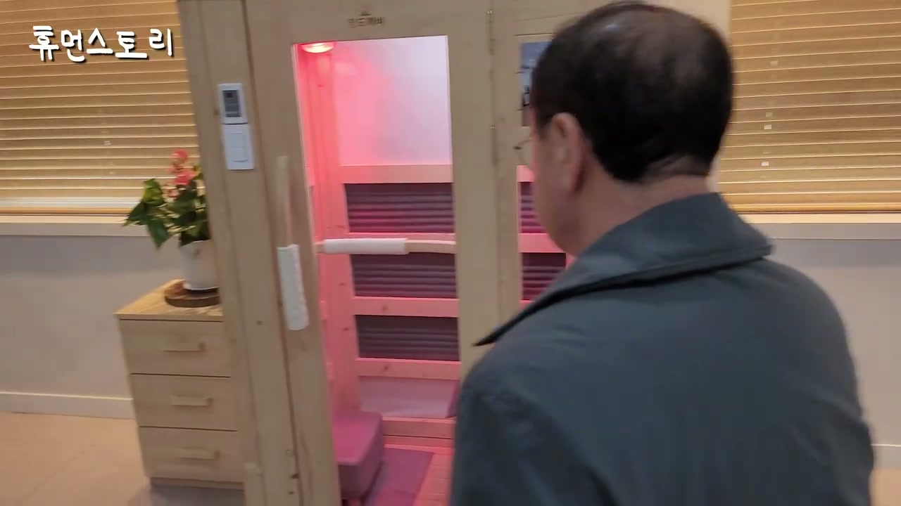
군산에서 서울로 돌아온 뒤, 약 4시간 만에 용산역에 도착한다. 그는 다시 회사가 있는 당산역 쪽으로 이동하고, 약 20분이면 간다고 말한다. 회사에 도착한 뒤 그곳이 잠도깨비 전시장이라고 소개한다.
전시장에는 운모를 넣어 만든 사우나, 배덮개, 베개 등이 있다. 배덮개는 와디즈 침구 부문에서 1등을 한 제품이라고 설명한다. 베개 역시 잠도깨비의 시작점이라고 말하며, 제품 안에 돌이 들어가 있다고 반복해 설명한다.
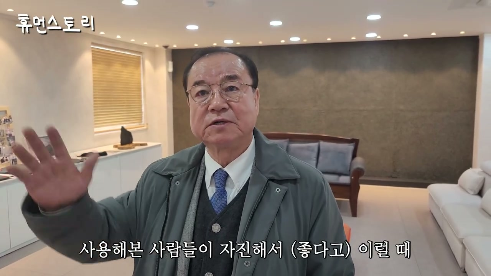
그는 잠도깨비로 도움을 받았다는 이야기를 들을 때 보람을 느낀다고 말한다. 처음에는 “내가 맞았다”는 식으로 자만도 했지만, 사용자 수가 1천 명, 2천 명, 3천 명으로 늘고 사용자가 자발적으로 좋다고 말하면서 더 깊은 보람을 느꼈다고 한다. 자신이 거쳐온 시간과 과정이 헛되지 않았다는 감각도 얻었다.
그 결과 그는 더 겸손해지고, 제품을 더 정교하게 만들 필요가 있으며, 세계 시장으로 나아가야겠다고 생각하게 됐다고 한다. 여기서 ‘알루보’라는 새로운 제품 또는 브랜드도 탄생했다고 언급한다. 즉 잠도깨비의 성공은 끝이 아니라 다음 사업 확장의 발판으로 제시된다.
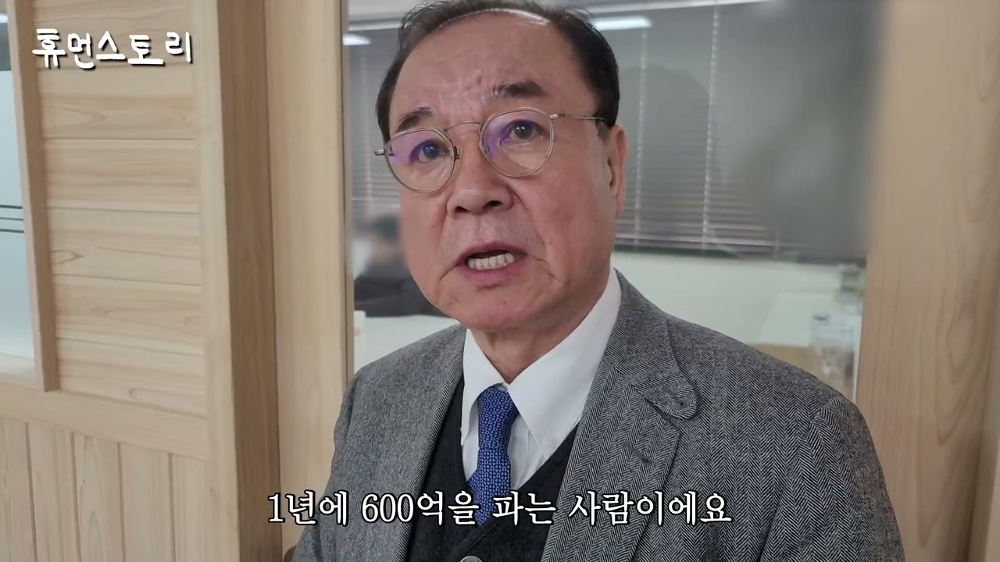
오후 회의는 일본에서 했던 오염수 수처리제를 국가기술화하는 팀과의 자리다. 그는 우리나라 수처리 전문가들이 모여 있다고 설명한다. 기계 분야, 국가기술 신청 분야, 판매 분야 담당자들이 있고, 그중 한 사람은 수처리제만으로 1년에 600억 원을 파는 사람이라고 말한다.
또 베트남 수출과 농업 관련 미팅도 이어질 예정이라고 한다. 오후 3시쯤 베트남 수출·농업 미팅이 있고, 이후 알루보 미팅까지 이어진다. 그의 하루는 새벽 군산 광산 확인, 서울 전시장, 수처리 회의, 수출·농업·신제품 미팅으로 꽉 차 있다.
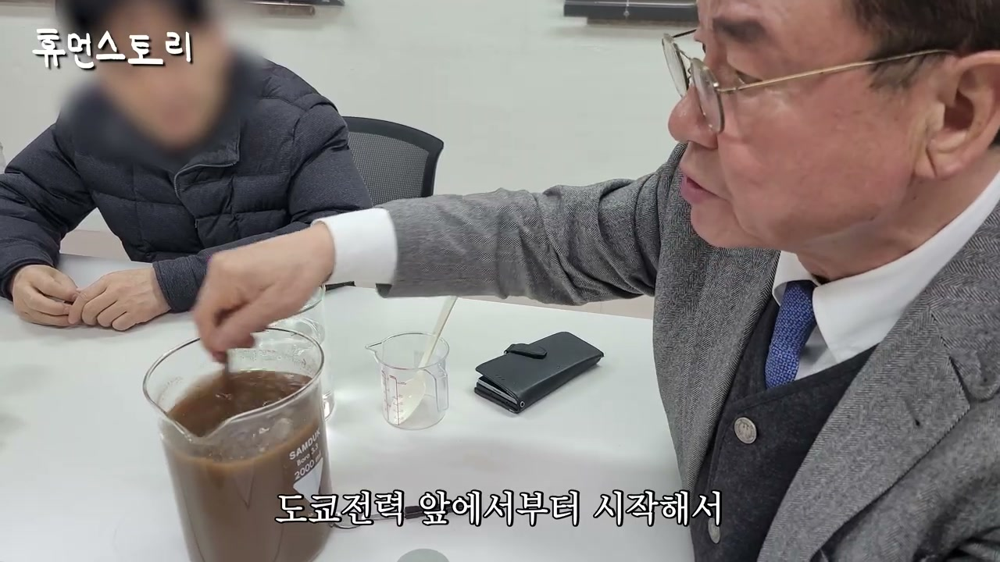
회의 중에는 코아라이트 시연이 나온다. 그는 흙에 코아라이트를 약 2g 정도 넣고, 1분 30초 정도 교반하면 된다고 설명한다. 코아라이트는 운모에 6가지 재료를 조합해 만든 것이라고 다시 설명한다.
그는 도쿄전력 앞에서 시작해 반경 20km를 자신들의 물질로 수처리했다고 주장한다. 회의 참석자는 빠르다고 반응한다. 이 장면은 그의 말이 단순 구상이 아니라 시연 가능한 물질과 절차로 정리되어 있음을 보여주는 역할을 한다.
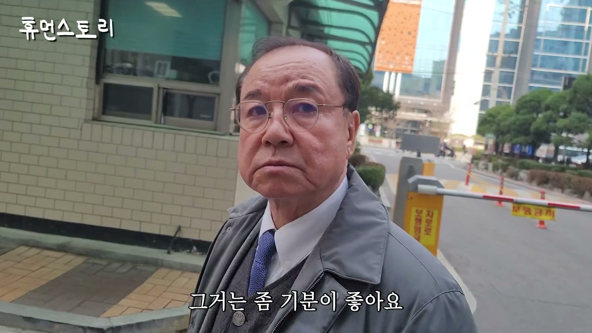
촬영 소감을 묻자 그는 자신이 아직 사람들 앞에 내놓을 만큼 성공한 사람은 아니라고 말한다. 다만 있는 그대로, 그동안 돌을 개발하면서 겪은 일을 진솔하게 설명할 기회를 얻어 기분이 좋다고 한다. 이 말은 성공담으로 포장하지 않으려는 태도를 보여준다.
앞으로의 목표로는 수처리를 국가기술화하고, 농자재는 국가 고시를 받으며, 많은 사람이 쓰게 하는 것을 든다. 베트남에는 고엽제 환자가 많고, 그 원인 중 하나로 다이옥신이 지하로 들어가 지하수를 오염시키며, 그 물을 마신 아이들이 피해를 입는다는 설명도 한다. 그는 베트남에서 자신들의 물질을 시험했고, 통과되어 수출하게 됐다고 말한다.
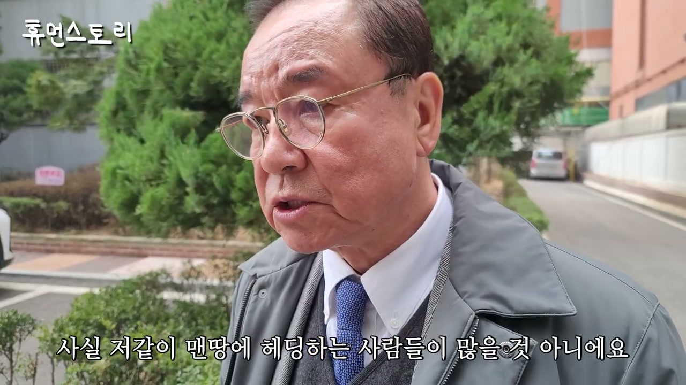
그는 각 분야에서 성공하면 좋겠다고 말한다. 광산에서 본 자원은 사회로 돌려줘야 한다고 생각한다. 자신처럼 맨땅에 헤딩하는 사람이 많을 것이고, 그런 사람들을 돕고 싶다는 의지도 밝힌다.
세상이 좋아졌지만 어떤 형태로든 사회로 돌아가야 하지 않겠느냐는 말은 그의 30년 실패담을 사회적 책임의 언어로 마무리한다. 자원을 가진 사람, 실패를 경험한 사람, 기술을 만든 사람이 결국 자기 이익만 보지 말고 공적 쓰임을 만들어야 한다는 관점이다.
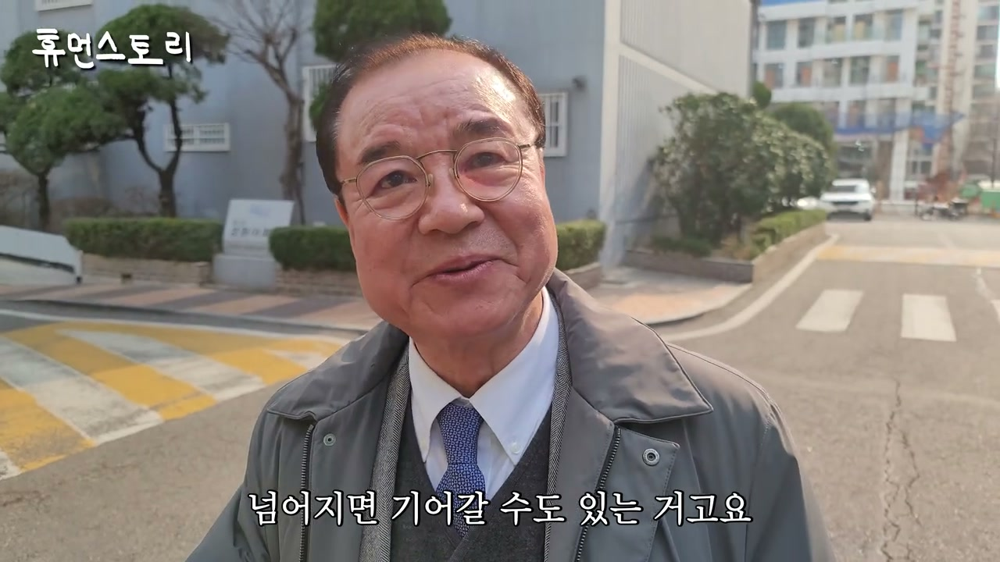
마지막으로 하고 싶은 말을 묻자 그는 자기 자신에게 물었을 때 “이게 내 길이다”라는 생각이 들면 그 길에는 반드시 어려움이 있다고 말한다. 어려움이 있다고 해서 포기하면 끝이라고 한다. 길을 바꿔 공격할 수도 있고, 넘어지면 기어갈 수도 있다고 말한다.
그의 메시지는 무조건 버티라는 말이 아니라 방향을 바꾸더라도 계속 가라는 쪽에 가깝다. 새만금 골재로 실패한 운모는 농업, 축산, 난연재, 접시, 방사능 오염수 처리, 화장품, 침구, 수처리제, 농자재로 계속 용도가 바뀌었다. 결국 그는 같은 자원을 붙잡되, 접근 방식은 계속 바꾸었다.
영상의 마지막 구호는 “휴먼스토리 화이팅”이다. 그러나 실제 결론은 한 개인의 화려한 성공담보다 더 복잡하다. 큰돈을 벌었던 사람이 자원 판단 실패로 몰락하고, 극단적 절망을 지나, 30년 동안 실패한 끝에 같은 돌의 다른 가치를 찾아가고 있다는 이야기다.
“돈이 떠나면 사람도 떠나요.”
“길을 찾자.”
“남 탓 하는 건 쉽잖아요.”
“꽃에 향기가 있으면 벌이 오듯이요.”
“포기하면 끝이다.”
“어려운 것은 극복해야 되는 대상이다.”
이 영상의 핵심은 “500억을 잃은 사람의 재기”라는 자극적인 제목보다, 자원의 가치는 처음 정한 용도에 갇히지 않는다는 데 있다. 운모는 새만금 방조제용 골재로는 실패한 돌이었지만, 흡착력이라는 성질을 중심으로 다시 보자 방사능 오염수 처리, 수처리, 농업, 화장품, 침구 소재로 해석될 여지가 생겼다. 같은 물질도 어떤 문제를 해결하느냐에 따라 1톤 13,000원 이하의 골재가 되기도 하고, 1톤 500만 엔짜리 소재가 되기도 한다.
주인공의 인생은 성공, 안주, 오판, 몰락, 고립, 극단적 절망, 연구, 피폭과 불면, 사업화, 사회 환원이라는 긴 곡선을 그린다. 그는 실패의 원인을 남에게만 돌리지 않고, 자신이 돌을 몰랐고 준비가 부족했으며 편하게 쉬려는 마음도 있었다고 돌아본다. 그 자기 성찰이 30년 동안 방향을 바꿔가며 계속 실험하게 만든 동력으로 제시된다.
실용적 시사점은 세 가지다. 첫째, 큰 자본과 과거 성공은 새로운 분야의 본질 이해를 대신하지 못한다. 둘째, 기초 소재 사업은 확장성이 큰 만큼 실패의 종류도 많고, 제품화까지 긴 시간이 필요하다. 셋째, 실패 뒤 다시 일어서려면 사람을 쫓기보다 자신이 먼저 준비되어야 하며, 길이 맞다고 판단되면 접근 방식을 바꾸더라도 포기하지 않는 태도가 필요하다.
댓글
GitHub 이슈 기반 댓글 시스템입니다.